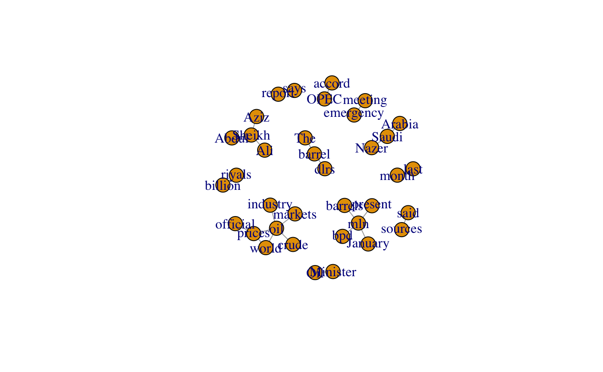
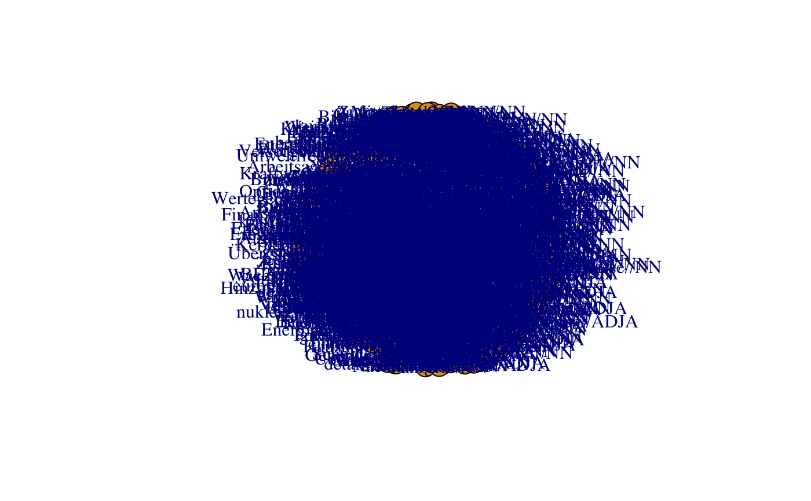

all_cooccurrences.RdObtain all cooccurrences in a corpus, or a partition. The result is a
Cooccurrences-class object which includes a data.table with
counts of cooccurrences. See the documentation entry for the
Cooccurrences-class for methods to process Cooccurrences-class
objects.
# S4 method for character Cooccurrences(.Object, p_attribute, left, right, stoplist = NULL, mc = getOption("polmineR.mc"), verbose = FALSE, progress = FALSE) # S4 method for partition Cooccurrences(.Object, p_attribute, left, right, stoplist = NULL, mc = getOption("polmineR.mc"), verbose = FALSE, progress = FALSE)
| .Object | A length-one character vector indicating a corpus, or a
|
|---|---|
| p_attribute | Positional attributes to evaluate. |
| left | A scalar |
| right | A scalar |
| stoplist | Tokens to exclude from the analysis. |
| mc | Logical value, whether to use multiple cores. |
| verbose | Logical value, whether to output messages. |
| progress | Logical value, whether to display a progress bar. |
The implementation uses a data.table to store information and makes
heavy use of the reference logic of the data.table package, to avoid
copying potentially large objects, and to be parsimonious with limited
memory. The behaviour resulting from in-place changes may be uncommon, see
examples.
To learn about methods available for the object that is returned,
see the documentation of the Cooccurrences-class. See the
cooccurrences-method (starting with a lower case c) to get
the cooccurrences for the match for a query, which may also be a CQP query.
# In a first scenario, we get all cooccurrences for the REUTERS corpus, # excluding stopwords stopwords <- unname(unlist( noise( terms("REUTERS", p_attribute = "word"), stopwordsLanguage = "en" ) ))#>#>#>r <- Cooccurrences( .Object = "REUTERS", p_attribute = "word", left = 5L, right = 5L, stoplist = stopwords ) ll(r) # note that the table in the stat slot is augmented in-place#>#>decode(r) # in-place modification, again r <- subset(r, ll > 11.83 & ab_count >= 5) data.table::setorderv(r@stat, cols = "ll", order = -1L) head(r, 25)#> a_id b_id ab_count size_coi a_count b_count size_ref obs_ref exp_coi #> 1: 149 150 21 310 31 23 3709 2 1.7740732 #> 2: 150 149 21 230 23 31 3797 10 1.7705488 #> 3: 375 149 12 110 11 31 3929 19 0.8442684 #> 4: 18 20 11 230 23 15 3797 4 0.8567172 #> 5: 20 18 11 150 15 23 3885 12 0.8550186 #> 6: 736 735 6 60 6 9 3984 3 0.1335312 #> 7: 89 90 6 60 6 10 3984 4 0.1483680 #> 8: 359 358 6 60 6 11 3984 5 0.1632047 #> 9: 306 349 5 80 8 6 3962 1 0.1187531 #> 10: 521 519 5 80 8 6 3962 1 0.1187531 #> 11: 15 12 27 780 78 47 3192 20 9.2296073 #> 12: 349 306 5 60 6 8 3984 3 0.1186944 #> 13: 519 521 5 60 6 8 3984 3 0.1186944 #> 14: 746 358 5 50 5 11 3995 6 0.1359703 #> 15: 747 358 5 50 5 11 3995 6 0.1359703 #> 16: 12 15 27 470 47 78 3533 51 9.1581314 #> 17: 844 678 6 60 6 18 3984 12 0.2670623 #> 18: 678 831 5 180 18 7 3852 2 0.3125000 #> 19: 12 414 9 470 47 14 3533 5 1.6437672 #> 20: 103 3 10 90 9 73 3951 63 1.6258352 #> 21: 831 678 5 70 7 18 3973 13 0.3116498 #> 22: 15 14 13 780 78 20 3192 7 3.9274924 #> 23: 53 434 6 230 23 12 3797 6 0.6853737 #> 24: 414 12 9 140 14 47 3896 38 1.6303271 #> 25: 149 325 5 310 31 7 3709 2 0.5399353 #> a_id b_id ab_count size_coi a_count b_count size_ref obs_ref exp_coi #> exp_ref ll rank_ll a_word b_word #> 1: 21.225927 95.66900 3872 mln bpd #> 2: 29.229451 84.18962 3873 bpd mln #> 3: 30.155732 47.35999 3874 barrels mln #> 4: 14.143283 46.53533 3875 dlrs barrel #> 5: 22.144981 42.22759 3876 barrel dlrs #> 6: 8.866469 39.76345 3877 riyals billion #> 7: 9.851632 37.78742 3878 emergency meeting #> 8: 10.836795 36.11641 3879 Ali Sheikh #> 9: 5.881247 34.16849 3881 Oil Minister #> 10: 5.881247 34.16849 3882 report says #> 11: 37.770393 33.04579 3883 oil prices #> 12: 7.881306 32.02630 3885 Minister Oil #> 13: 7.881306 32.02630 3886 says report #> 14: 10.864030 29.41982 3887 Abdul Sheikh #> 15: 10.864030 29.41982 3888 Aziz Sheikh #> 16: 68.841869 28.57748 3890 prices oil #> 17: 17.732938 28.54899 3891 Arabia Saudi #> 18: 6.687500 23.02659 3905 Saudi Nazer #> 19: 12.356233 21.68849 3913 prices official #> 20: 71.374165 21.44422 3918 sources said #> 21: 17.688350 20.07454 3935 Nazer Saudi #> 22: 16.072508 19.61622 3941 oil crude #> 23: 11.314626 18.55416 3954 last month #> 24: 45.369673 17.69417 3959 official prices #> 25: 6.460065 17.63743 3960 mln present #> exp_ref ll rank_ll a_word b_wordif (requireNamespace("igraph", quietly = TRUE)){ r@partition <- enrich(r@partition, p_attribute = "word") g <- as_igraph(r, as.undirected = TRUE) plot(g) }#># The next scenario is a cross-check that extracting cooccurrences from # from a Cooccurrences-class object with all cooccurrences and the result # for getting cooccurrences for a single object are identical a <- cooccurrences(r, query = "oil") a <- data.table::as.data.table(a) b <- cooccurrences("REUTERS", query = "oil", left = 5, right = 5, p_attribute = "word") b <- data.table::as.data.table(b) b <- b[!word %in% stopwords] all(b[["word"]][1:5] == a[["word"]][1:5]) # needs to be identical!#> [1] FALSEstopwords <- unlist(noise( terms("GERMAPARLMINI", p_attribute = "word"), stopwordsLanguage = "german" ) )#>#>#># We now filter cooccurrences by keeping only the statistically # significant cooccurrens, identified by comparison with cooccurrences # derived from a reference corpus plpr_partition <- partition( "GERMAPARLMINI", date = "2009-11-10", interjection = "speech", p_attribute = "word" )#>#>#>plpr_cooc <- Cooccurrences( plpr_partition, p_attribute = "word", left = 3L, right = 3L, stoplist = stopwords, verbose = TRUE )#>#>#>#>#>#>#>#>merkel <- partition( "GERMAPARLMINI", speaker = "Merkel", date = "2009-11-10", interjection = "speech", regex = TRUE, p_attribute = "word" )#>#>#>merkel_cooc <- Cooccurrences( merkel, p_attribute = "word", left = 3L, right = 3L, stoplist = stopwords, verbose = TRUE )#>#>#>#>#>#>#>#>#>#># Esentially the same procedure as in the previous example, but with # two positional attributes, so that part-of-speech annotation is # used for additional filtering. protocol <- partition( "GERMAPARLMINI", date = "2009-11-10", p_attribute = c("word", "pos"), interjection = "speech" )#>#>#>protocol_cooc <- Cooccurrences( protocol, p_attribute = c("word", "pos"), left = 3L, right = 3L ) ll(protocol_cooc)#>#>decode(protocol_cooc) merkel <- partition( "GERMAPARLMINI", speaker = "Merkel", date = "2009-11-10", interjection = "speech", regex = TRUE, p_attribute = c("word", "pos") )#>#>#>merkel_cooc <- Cooccurrences( merkel, p_attribute = c("word", "pos"), left = 3L, right = 3L, verbose = TRUE )#>#>#>#>ll(merkel_cooc)#>#>#>#>f <- subset(f, a_pos %in% c("NN", "ADJA")) f <- subset(f, b_pos %in% c("NN", "ADJA")) f <- subset(f, c(rep(TRUE, times = 50), rep(FALSE, times = nrow(f) - 50)))#> Error in nrow(f): Objekt 'f' nicht gefundenmerkel_min <- subset(merkel_cooc, by = f) if (requireNamespace("igraph", quietly = TRUE)){ g <- as_igraph(merkel_min, as.undirected = TRUE) plot(g) }